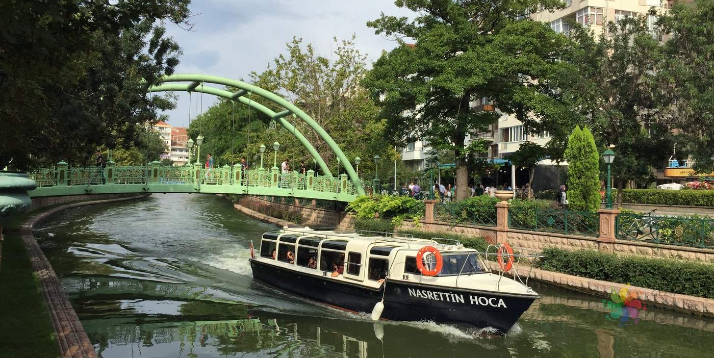

| Home | Local Dishes | Historical Places | Useful Links | About Me | Contact Me | Registration |

Eskişehir, city, west-central Turkey. It lies along the Porsuk River, a tributary of the SakEskişehir, city, west-central Turkey. It lies along the Porsuk River, a tributary of the Sakarya River, at a point about 125 miles (200 km) west of Ankara.arya River, at a point about 125 miles (200 km) west of Ankara.
Located near the site of the ancient Phrygian city of Dorylaeum, the present city probably began in Byzantine times as a cluster of settlements around hot springs. The scene of a Crusader victory over the Seljuq Turks in 1097, it came under Ottoman control near the end of the 13th century. The city expanded with the coming of the railway in the late 19th century and the immigration of Turks from the European provinces of the Ottoman Empire in the early 20th century. Despite its name (Turkish: “Old City”), most of the city was rebuilt after its destruction in the Turkish War of Independence (1919–22).
Eskişehir is divided into a commercial and industrial section, situated on low ground, and a residential quarter that occupies higher ground. One of the largest industrial centres in Turkey, it produces sugar, textiles, bricks, cement, chemicals, processed meerschaum, and railway and agricultural equipment. It also has aircraft workshops and is a centre for cotton research. It is a rail junction on the lines between Istanbul and Ankara and between Istanbul and Baghdad. Eskişehir is the seat of the University of Anatolia (1958). Pop. (2000) 482,793; (2013 est.) 659,924.